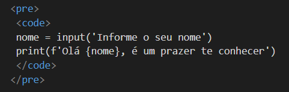

O comando document.getElementById('teste') é escrito na linguagem JavaScript.
Com a tag CODE você coloca o texto em questão em uma formatação que possui uma fonte monoespaçada. Isso auxilia na leitura do código.
Observação importante! a tag CODE não possui identação de código, para que você possa notar na página o código com identação, é necessário envelopar a tag CODE na tag PRE, assim:
nome = input('Informe o seu nome')
print(f'Olá {nome}, é um prazer te conhecer')

Tag de citação: <q></q>
Como dizia meu pai: Melhor um pássaro na mão do que dois voando.
Segundo Maurício Samy Silva, em seu livro Fundamentos de HTML5 e CSS3:
Este livro destina-se para iniciantes e estudantes interessados na criação de sites tanto na área de design quanto na área de desenvolvimento e programação, sem necessidade de conhecimento prévio....
Estou estudando HTML5 e CSS3
Utilizado a tag ABBR para indição de abreviação. Essa tag possui o parâmetro TITLE que é onde colocamos o nome completo.
Atenção! Se parar o mouse em cima da abreviação, o nome completo é exposto. Como se fosse um hint.
Este testo será apresentado invertido.
Este testo será apresentado invertido.
Atenção! a tag utilizada foi BDO. Ela possui o parâmetro dir de direção. Nesse parâmetro, você diz o sentido da apresentação pelos valores:
rtl: Right to Left
ltr: Left to Right